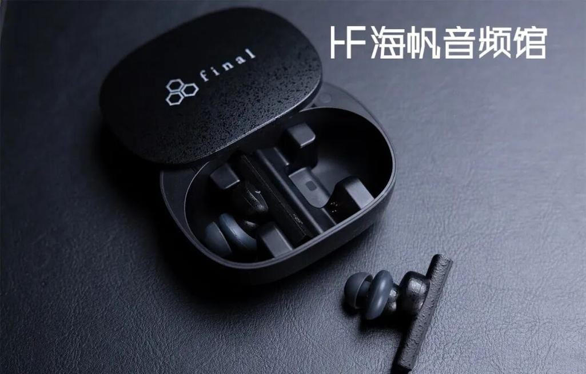

Final Audio ZE8000

音质优先的日系旗舰真无线，声场罕见
客观评测
ZE8000 是 Final 的旗舰真无线耳机，搭载 10mm f-Core for ZE8000 动圈单元，配合 8K SOUND 数字声学处理，主动降噪为前馈+反馈混合方案。蓝牙 5.2，支持 aptX Adaptive 高码率传输，IPX4 防水，单次续航约 5 小时（降噪开启），含盒约 15 小时。实测声场规模与动态在真无线中罕见，低频质感高级，人声细腻，层次感与自然度接近高端有线耳塞。
主观点评
ZE8000 是 Final 对真无线音质上限的一次正面回答。它刻意淡化降噪的存在感，把所有心思都放在声音上：宽广的声场、从容的动态、细腻的空气感，听爵士与古典时那种接近有线耳塞的舒展，让人几乎忘记这是蓝牙耳机。触控操作独特但需要适应，续航也只是够用。若你把音质置于一切之上，ZE8000 是 2023 年最动人的真无线答案之一。
优点与不足
- 声场规模与动态在真无线中罕见，接近有线听感
- 低频质感高级，人声细腻有空气感
- aptX Adaptive 高码率传输，音质上限高
- 续航偏短，降噪开启约 5 小时
- 触控操作逻辑独特，需要适应期
- 降噪表现中规中矩，不及同价降噪强者
参数规格
| 类型 | 真无线主动降噪 |
|---|---|
| 单元 | 10mm f-Core for ZE8000 动圈 |
| 蓝牙 | 蓝牙 5.2，支持 aptX Adaptive |
| 降噪 | 混合式主动降噪 |
| 声学 | 8K SOUND 数字声学处理 |
| 续航 | 约 5 小时（降噪开）/ 约 15 小时含盒 |
| 防护 | IPX4 防水 |
| 重量 | 单边约 7g |
| 充电 | USB-C 充电盒 |
| 操控 | 触控面板 |